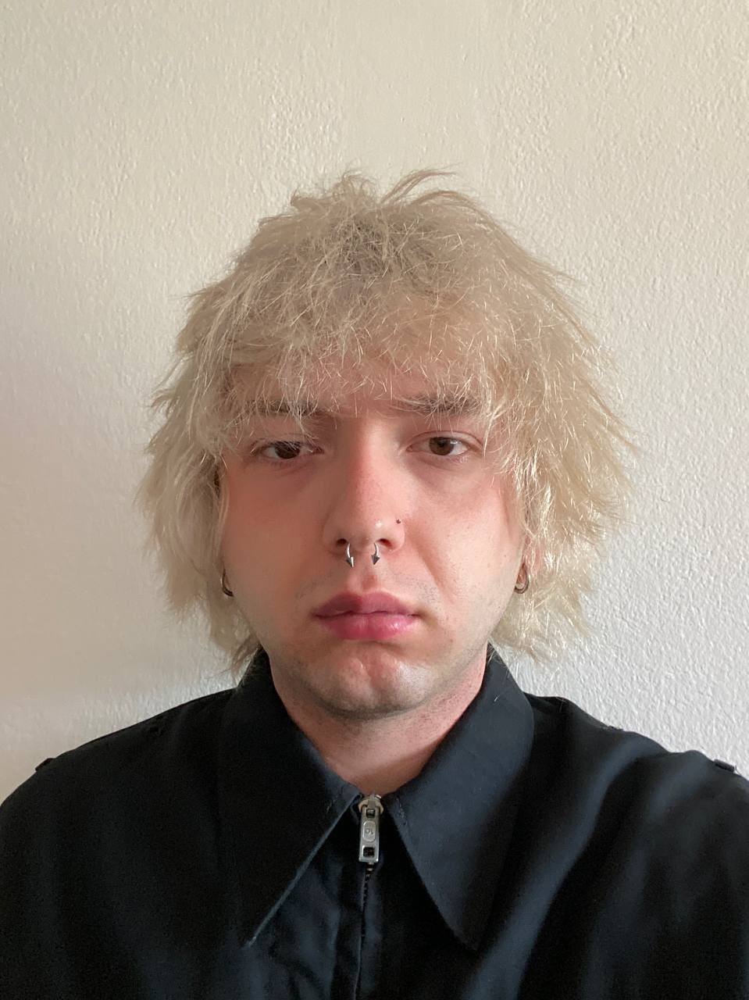

Über mich:
- Geburtsdatum / -ort: 13.03.2005 in Charkiw
- Staatsangehörigkeit: ukrainisch
- Familienstand: ledig
Schulische ausbildung
- 11/2024 – 07/2025: Berlitz Deutschkurs, Niveau B2
- 10/2023 – 07/2024: Willkommensklasse, Willi-Graf-Gymnasium, Niveau B1
- 08/2020 – 06/2024: Patent- und Computer-College, Charkiw (Ukraine)
- 08/2011 – 06/2020: Allgemeinbildende Schule, Charkiw (Ukraine)
Weitere Fähigkeiten und Kenntnisse
- Sprachkenntnisse: Ukrainisch und Russisch, Englisch (gut), Deutsch (B2)
- EDV: Microsoft Word, Excel, PowerPoint; Adobe Premiere, Adobe Audition, Adobe Photoshop; FL Studio
- Hobbys: Webseiten programmieren, Videobearbeitung und -produktion, Musik
Warum Mediengestalter?
Ich interessiere mich sehr für alles, was mit dem Beruf des Mediengestalters Bild und Ton zu tun hat. Schon seit meiner Kindheit liebe ich es, Filme und Serien zu schauen, und ich bin ein großer Fan vieler Musiker und ihrer Musikvideos. Ich hatte schon immer den Wunsch, selbst etwas Ähnliches zu erschaffen. Für mich ist dieser Beruf kreativ und zukunftsorientiert, da man dabei vielfältige Fähigkeiten in verschiedenen Bereichen erwirbt.
Besonders spannend finde ich sowohl die Videoproduktion (die Arbeit mit der Kamera und deren Einstellungen) als auch die Postproduktion (z.B. Videoschnitt).
Ich habe bereits praktische Erfahrungen in diesem Bereich gesammelt: So habe ich Videos für YouTube sowie Musikvideos für Freunde bearbeitet. Der gesamte Prozess des Videodrehs bereitet mir große Freude. Ich besaß früher eine Vintage-Kamera, mit der ich gerne das Stadtleben aufgenommen und anschließend zu einem Video zusammengeschnitten habe.
Neben der Arbeit mit Adobe Premiere Pro habe ich auch gelernt, Tonspuren in Adobe Audition zu bearbeiten, um eine passende Atmosphäre zu schaffen. Darüber hinaus interessiere ich mich sehr für Farbkorrektur sowie für die Bearbeitung von Bildern und Videos.
Meine kleine Fotogalerie mit Farbkorrektur
{kind=link}
{kind=link}
{kind=link}
{kind=link}
{kind=link}
{kind=link}
Videos, die ich selbst aufgenommen und bearbeitet habe
Meine Fähigkeiten in der Bearbeitung von Stimme und Geräuschen
Vor der Bearbeitung
Nach der Bearbeitung